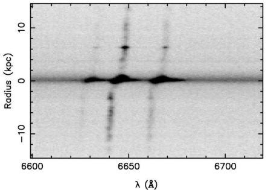
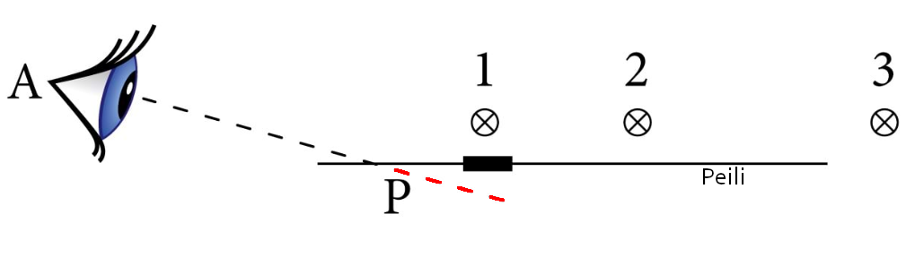
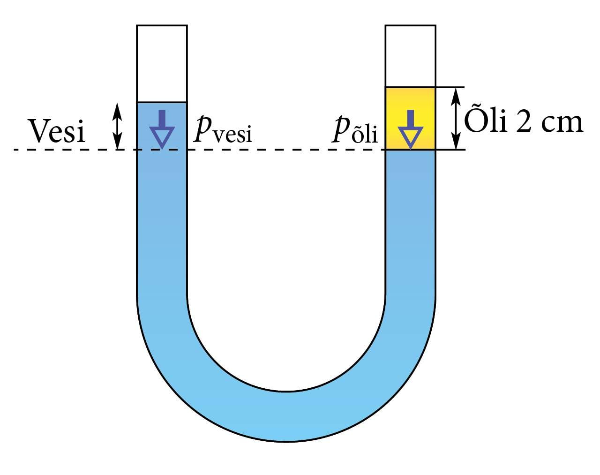

Optiikka
1.1 Valo ja valonlähteet
Näkyvän valon aallonpituudet?
Kumpi valonlähde, kynttilän liekki vai kaasu-uuni palaa korkeammassa lämpötilassa?
1.2 Valo on energiaa
Mistä auringon energia on peräisin?
Mikä valon väri on energeettisin?
Miten ihminen aistii infrapunavalon?
Mitä valoa kutsutaan kylmäksi valoksi?
1.3 Aurinko, tähti
Mikä aiheuttaa Auringon purkaukset?
Onko kaikilla tähdillä sama lämpötila? Mikä on Auringon lämpötila? Mikä on tähden suurin mahdollinen lämpötila?
Mikä tähti on meitä lähinnä? Kuinka kaukana se on? Entä toiseksi lähin tähti, mikä on sen etäisyys?
Mistä revotulet aiheutuvat?
Projekti: Mittaa Auringon halkaisija (Mart Kuurme, Horizon 8/1998). Tarvitset. . .
Van Allenin vyöhykkeet ja miten kuulennoissa suojauduttiin varatuilta hiukkailta
Aurinkotuuli
Aurinkotuuli ja auringonpilkut. Video
1.4 Näkyvän valon spektri
Kuvassa on UGV 2936 -nimisen galaksin spektriä kapealla aallonpituuskaistalla. Graafin x-akseli näyttää aallonpituudet ja y-akseli on etäisyys galaksin ytimestä. Mitä tummempi kohta on, sitä enemmän valoa emittoituu tällä aallonpituudella. Miksi galaksin eri päissä emittoitunut valo on eri aallonpituudella? Vastausvaihtoehdot:
- (1) galaksi pyörii
- (2) galaksi lähestyy meitä
- (3) galaksi loittonee meistä
- (4) galaksin eri päissä on erilaisia tähtiä

1.5 Valon suodattimet
1.6 Valon suoraviivainen eteneminen
1.7 Valonnopeus
Taitekerroin \( n \).
Ensimmäisen mittauksen valon nopeudesta teki herra Ole Christensen Rømer vuonna 1675 tutkiessaan Jupiterin Io-kuun liikettä. Ion rata on lähes samassa tasossa kuin Maan rata, joten Io ajoittain ja säännällisesti katoaa Jupiterin varjon alle piiloon, eli tapahtuu siis Io-kuun pimennys. Kahden peräkkäisen pimennyksen välinen aika on noin 42,5 tuntia, eli Io kiertää Jupiterin tuossa ajassa. Aika kuitenkin vaihtelee 15 sekuntia riippuen Maan, Auringon ja Jupiterin keskinäisestä sijainnista. Laske valon nopeus, kun tiedät, että Maan ja Auringon välinen etäisyys on \(1.5 \times10^8\) km.
Piirrä kuva, missä näkyy Aurinko, Maa, Jupiter ja Io sekä niiden kiertoradat. Huomaa, että (lähes) kaikki planeetat ja kuut kiertävät samaan suuntaa. Merkitse kuvaan vielä Jupiterin aiheuttama varjo sen taakse. Sieltä Io tulee aina ajoittain näkyviin.
Kuvasta pohdi, missä kohtaa Maa on, kun Io tulee näkyviin. Sitten pitää laskea, missä Maa sijaitsee, kun Io tulee seuraavan kerran näkyviin.
Mieti, missä kohtaa Maa loittonee nopeiten Io:sta, eli löytyykö se paikka, jossa saadaan tuo 15 sekunnin vaihtelu.
Laske, kuinka pitkän matkan Maa kulkee 42,5 tunnissa eli ajassa, joka kestää Ion pimennyksestä toiseen. Vihje: ympyrän kehä ja verranollisuus.
Tämän ylimääräisen matkan kulkemiseen valolla kestää 15 sekuntia. Laske siis nopeus.
Kun tiedät, että valolta kestää matka Auringosta Maahan 8 minuuttia ja 20 sekuntia, laske Maan ja Auringon välinen etäisyys kilometreinä.
Kuinka kauan valolta kestää kulkea 0,5 cm paksun lasin läpi. Vihje: Etsi jostain lasin taitekerroin, ja muista että valon nopeus lasissa on valon nopeus ilmassa jaettuna lasin taitekertoimella.
Jos tennispallon vauhti olis 90% valonnopeusta, kuinka monta kilometriä se etenee sekunnissa? Mitä silloin tapahtuisi?
Michelsonin interferometri ja valonnopeus. Lue Valon kilparata
$$E=mc^2$$.
1.8 Värit varjot ja kuun vaiheet
1.9 Valon heijastuminen
Heijastuslain mukaan tulokulma \( \alpha \) on yhtäsuuri kuin heijastuskulma \( \beta \), eli
$$\alpha = \beta$$
Tulokulma kasvaa 10\( ^\circ\). Mitä tapahtuu heijastuskulmalle?
Katselet Kuun heijastusta peilityynestä lammesta. Kun kävelet poispäin, mitä tapahtuu heijastukselle; liikkuuko se johonkin suuntaan, ja mihin? Vihje: Piirrä kuva, kahdesta eri tapauksesta, kaukana ja lähellä lampea.
Pisteessä A oleva silmä tuijottaa peilin pisteeseen P. Minkä lampun silmä Näkee? Perustele.

Tulokulman ja heijastuskulman välinen kulma on \(90^\circ\). Mikä on tulokulma?
Miten peilin kuvan etäisyys kohteesta muuttuu, kun peili siirretään sinne, missä kuva oli äsken?
Olet peilityynen järven rannalla ja katselet auringon kuvaa järvestä. Miten kuva muuttuu, kun kävelet kohti rantaa? Auringon säteet ovat samansuuntaisia.
Tasopeiliin tulevan säteen tulokuma on 30 astetta. Mikä on tulokulman ja heijastuskulman välinen kulma?
1.10 Näkeminen, värit.
1.11 Tasopeili, symmetriat.
Lapsi katsoo peilityynen lammen pintaa ja näkee Auringon lammessa. Piirrä kuvaan lapsi, lampi, peili, aurinko ja sen kuva. Mihin suuntaan lapsi katsoo, jotta näkee auringon vedessä?
Kun katsot pimeällä ikkunasta ulos, näet heijastuksesi ikkunassa. Miksi niitä on yleensä 2 tai kolme?
Lähestyt peiliä nopeudella 2 m/s. Millä nopeudella peilikuvasi lähestyy sinua?
Kärpänen lähestyy peiliä kohtisuoraan nopeudella 1 m/s. Kuinka nopeasti peilin pitää liikkua, jotta kärpäsen kuva pysyy paikallaan?
Isossa huoneessa on 2 metriä leveä peili. Peilin lähellä, 1/2 metriä peilistä ja 1 m seinästä seisoo ihminen, joka katsoo peiliin. Kaveri lähestyy kohtisuoraan peiliä sen keskipisteestä, mutta toiselta puolen huonetta. Kuinka kaukana hän on, kun toinen näkee hänet peilin kautta?
Kaksi peiliä ovat 45\( ^\circ \) kulmassa toisiinsa nähden. Peilien välissä on palava kynttilä. Kuinka monta kynttilän kuvaa voi nähdä peileistä?
Esineen ja tasopeilin välinen etäisyys on 0.3 cm. Kuinka suuri on esineen ja sen kuvan välinen etäisyys?
Kuinka kaukana esine on peilistä, jos välimatka esineen ja sen kuvan välillä on 0.8 m?
Pariisin Pierre parvekkeellaan pieni peili kädessään katseli Eiffel-tornia. Peilin korkeus on 5 cm. Kun peili on 40 cm päässä hänen naamastaan, koko Eiffel-torni mahtui peiliin. Kuinka kaukana Pierre silloin oli? Eiffel-tornin korkeus on 312 m.
1.12 Kupera ja kovera peili
1.13 Valon taittuminen
Valon kulku on suoraviivaista. Tullessaan optisesti erilaisesta aineesta toiseen, valo taittuu. Valon tullessa optisesta harvemmasta aineesta optisesti tiheämpään, se taittuu pinnan normaaliin päin.
- Jatka valon liikettä oheisissa tilanteissa. Vihje Piirrä normaali ja tulokulma sekä arvioi taitekulma. Piirrä taittunut säde.
- Jatka valon (lasireunaisessa) vesitynnyrissä. Vihje Piirrä normaali ja tulokulma sekä arvioi taitekulma. Piirrä taittunut säde.
- Mikä on suurin mahdollinen taitekulma?
1.14 Esineen ja kuvan sijainti
1.15 Valon kokonaisheijastuminen
1.16 Kupera ja kovera linssi
Dioptria: \( D = \frac1f \), missä \(f \) on polttoväli.
Dioptrioille pätee yhteenlaskulaki \( D = D_1 + D_2 \), esimerkiksi kahden linssin \(D_1 = 3 \) dpt ja \( D_2 = 2\) dpt yhteenlaskettu dioptrialuku on, kun linssit laitetaan oikein peräkanaa on \( D = D_1 + D_2 = 3 + 2 = 5\) dpt.
- Mikä on dioptria-luku linssille, jonka polttoväli on \(f=50\) cm.
- Linssisysteemin polttoväli on 40 cm. Toisen linssin polttoväli on 25 cm. Mikä on toisen lissin dioptrialuku?
1.17 Kuva. Suurennuslasi
Lukiossa opit linssintekijän yhtälön
$$ \frac1f = \frac1a + \frac1k$$
missä \(a\) on esineen etäisyys ja \(k\) on kuvan etäisyys linssistä
1.18 Kuvan muodostuminen
1.19 Silmät, silmälasit. Likinäköisyys ja kaukotaitteisuus
- Henkilö, joka käyttää normaalisti silmälaseja, joiden taittovoimakkuus on \(-4\) dpt ostaa sukelluslasit. Tarvitseeko hän vedessä suuremman vai pienemmänn taittovoimakkuuden lasit?
1.20 Kamera. Mikroskooppi
- Kameran valokennossa on 8 megapikseliä. Kuinka monta "solua" kennossa on?
- Haluat ottaa kuvan autosta, jonka nopeus on\(90\) km/h. Kuinka pitkä valotusaika kamerassasi voi olla, jotta kuvasta tulee tarkka? Kuva on tarkka, jos se
ei liiku yli \(s = 0.1\)mm kennolla. Auto liikkuu kohtisuoraan optisen akselin suhteen, ja on \(a=10\) m:n päässä linssistä. Kuva muodostuu valokennolle, joka on \( k = 5\) cm linssistä. Katso linssintekijän yhtälö kappaleesta 1.17.
- Valokuvaat veden virtausta korkeassa vesiputouksessa. Vesipisarat välkkyvät, ja muodostavat pitkiä pystysuuntaisia vanoja kuviin. Kun kamera on maisemakuvausasennossa (vaakasuorassa), vanat ovat \(l_1 = 120\) pikseliä pitkiä. Kuinka pitkät ne ovat, kun kamera käännetään henkilökuvausasentoon (portretti) eli \(90^\circ\) astetta optisen akselin suhteen? Oleta, että valotusaika ja optisen akselin suunta on sama molemmissa tapauksissa.
Vihje. Kamera koostuu linssistä ja sulkijasta, sekä kennosta. Kun otat kuvan, kameran sulkija avautuu, jolloin valo pääsee kulkemaan kohteesta linssin kautta valokennolle. Sulkija sulkeutuu valotusajan kuluttua, eikä kennolle enää tule valoa (tämä siis DLSR, kännykamera ja pokkari toimivat eri tavalla). Sulkija on mekaaninen laite, joka koostuu kahdesta verhosta, jotka aukeavat, toinen ylös- ja toinen alaspäin. Mekanismissa on kaksi verhoa, jotta se ehtii toimimaan myös lyhyillä valotusajoilla, ja valo tulee tasaisemmin kennolle. Kuvaa otettaessa kennommainen sulkija avautuu kokonaan, ja etummainen alkaa avautua. Ensimmäinen sulkija lähtee menemään kiinni jo ennen kuin toinen on kokonaan auki, jos valotusaika on lyhyt. Sulkijan verho liikkuu tasaisella nopeudella \( v \), ja lyhyellä valotusajalla, valokaistale kulkee kennolla samalla nopeudella \( v \).
1.21 Kaukoputki
1.22 Google-lasit ja lisätty todellisuus
Mekaniikka
2.1 Massa on kappaleen hitauden mitta
2.2 Aineen tiheys
Tiheys \( \rho\) on massan \(m\) ja tilavuuden \(V\) suhde eli \( \rho = \frac mV \). Tiheyden yksikkö on kg/m\(^3\).
- Kappaleen massa on 1 kg ja tilavuus on 400 cm\(^3\). Mikä on sen tiheys?
- 10 grammaa painava rautakuula päällystetään muovilla. Päällystämisen jälkeen kuulan massa on 15 grammaa. Mikä on muovilla päällystetyn kuulan keskimääräinen tiheys, kun muovin tiheys on \(1.4\) g/cm\(^3\)?
- Kullankaivaja löysi kvartsikiteen, jossa on kultamalmia seassa. Hän ajatteli myydä koko kiteen, eikä erottaa siitä kultaa. Kultakauppias punnitsi ja mittasi kiteen, massa on \(m=100\) g ja sen tilavuus on \( V = 12.5\) cm\(^3\). (Tilavuuden saa helposti upottamalla sen veteen.) Kultakauppias lupasi maksaa ainoastaan kullasta. Hetken mietittyään hän sanoi, että kultaa on \( m_k' = 64\) g. Kuinka monta grammaa kultakauppias pimitti kullankaivajalta? Kullan tiheys on \(\rho_k = 19.3 \) g/cm\(^3\) ja kvartsin tiheys \(\rho_{kv} = 2.7 \) g/cm\(^3\).
- Vesiliukumäki rakennetaan mäen päälle valuttamalla vettä vesiletkusta liukumäkeen, jonka leveys on 1 m. Yhdessä sekunnissa letkusta tulee 1 \(\ell\) vettä, ja jään paksuus kasvaa nopeudella \(u = 0.05\) mm/s. Kuinka pitkä liukumäki voidaan tehdä? Veden tiheys on \(\rho_v = 1.00\) g/cm\(^3\) ja jään tiheys \(\rho_j = 0.92\) g/cm\(^3\).
??? ?? ?
(Tüdruk rajab mäenõlvale liumäge, kastes seda mäe otsast veega, mis mäe külge mööda l=1m laiuse ribana alla voolab. Sekundis tuleb voolikust v=1l vett, jääkiht kasvab paksusega u=0,05mm/s. Kui pika liuraja saab selliselt jääga katta? Vee tihedus ρv=1,00g/cm3, jää tihedus ρj=0,92g/cm3.)
- Kappale painaa kolmanneksen vähemmän vedessä kuin ilmassa. Määritä kappaleen tiheys, kun veden tiheys on 1000kg/m\(^3\).
- On kaksi samanpainoista kultasormusta, joissa molemmissa on 585 tuhannesosaa kultaa. Loput on esimerkiksi hopeaa tai kuparia. Kumpi sormus on tilavuudeltaan suurempi ja kuinka moninkertaisti, hopea- vai kuparilejeeringistä valmistettu?
Kullan tiheys on \(\rho_k = 19300\) kg/m\(^3\),
hopean tiheys on \(\rho_h = 10500\) kg/m\(^3\) ja
kuparin tiheys on \(\rho_c = 8900\) kg/m\(^3\). Oleta, että lejeeringin tilavuus on kahden osatilavuuden summa (oikeasti se ei ihan ehkä ole).
- Kolme erilaista nestettä tuotiin laboratorioon tutkittavaksi. Ensimmäisen massa on \(m_1 = 100\) mL, kolmannen tiheys on \(\rho_3 = 1270 \) kg/m\(^3\). Ensimmäisen ja toisen nesteen tiheyksien suhde on \(\frac{\rho_2}{ \rho_1 } = 1.27 \). Ensimmäisen ja toisen nesteen tilavuuksien suhde on \( \frac{V_2}{V_1} = 1.27 \). Kolmannen ja toisen nesteen tilavuuksien suhde on \( \frac{V_3}{V_2} = 1.27 \). Kolmannen ja toisen nesteen tiheyksien ero on \(\rho_3 - \rho_2 = 270\) kg/m\(^3\). Laske nesteiden massat \(m_1, m_2\) ja \(m_3\).
2.3 Liike
Nopeus \(v\) on matka \(s\) jaettuna ajalla \(t\) eli \( v = \frac st\).
Nopeus on suhteellista, esimerkiksi jos kävelet junassa nopeudella \( v_i = 3\) m/s, ja junan nopeus on \(v_j = 20 \) m/s, niin nopeutesi maan suhteen on \( v = v_i + v_j = 3 \text{ m/s}+ 20 \text{ m/s}= 23\) m/s jos menet junan kulkusuuntaan. Jos kuljet vastakkaiseen suuntaan, nopeutesi maan suhteen on \( v = v_j - v_i = 20 \text{ m/s}- 3 \text{ m/s}= 17\) m/s
- Nopeudella \(v_1=99\) km/h kulkeva autoilija huomaa edessään vastakkaista kaistaa lähestyvän auton, ja painaa sekuntikellon käyntiin. 40 sekunnin kuluttua autot kohtaavat (eri kaistoilla). Kuinka kaukana autot olivat toisiaan kun sekuntikello käynnistettiin? Toinen auto kulki nopeutta \(v_2 = 90 \) km/h.
- Polkypyöräilijä ajaa keskimäärin 9 m/s. Kuinka kauan hänellä kestää ajaa 25 km pituinen matka?
- Jokeen heitetty puupalikko valui virran mukana 5 minuutissa 120 metriä. Kuinka suuri on joen virtausnopeus? Oleta, että palikka ja virta kulkevat samalla nopeudella.
- Erkki ja Einari lähtevät samaan aikaan Tartosta piknikille 25 kilometrin päähän. Erkki ajaa koko matkan vakionopeudella 30 km/h. Einari ajaa matkan nopeudella 35 km/h, mutta pitää puolivälissä 5 minuutin pysähdyksen. (1) Kumpi on ennemmin perillä? (2) Mikä on molempien pyöräilijöiden keskinopeus?
- Vene ylitti 120 metriä leveän joen siten, että vene oli koko ajan kohtisuorassa joen kulkusuuntaan vastaan. Mikä on veneen keskinopeus virran suhteen, kun se rantautui vastarannalle 12 metriä lähtöpaikasta alavirtaan? Joen virtausnopeus on 0,8 m/s.
- Juna kulkee 90 km/h ja matkustaja kävelee siellä 4 km/h kulkusuuntaa vastaan. Mikä on kävelijän nopeus maan suhteen?
- Kiihtyvälle liikkeelle pätee, että \(s = \frac12 at^2 \) ja \(s = \frac{ v^2}{2a} \). Toisessa yhtälössä kuljettu matka on verrannollinen kiihtyvyyteen, mutta toisessa kääntäen verrannollinen. Miten selität tämän?
- Laske, kuinka nopeasti vesipisara putoaa ilmassa terminaalinopeudella (eli vakionopeudella, se ei enää kiihdy). Vaesipisaran ilmanvastus on \(F_v = k Sv^2\), missä \(S\) on pisaran otsapinta-ala ja \(k\) on vakio.
2.4 Liikkeen kuvaaja
- Metro kulkee kahden pysäkin välisen matkan keskinopeudella 36 km/h. Ensimmäiset 2/3 matkasta metrojuna kiihdyttää tasaisella kiihtyvyydellä huippunopeuteensa, ja sen jälkeen aloittaa hidastamisen seuraavaa pysäkkiä varten. Mikä on junan maksiminopeus? Piirrä tilanteesta kuvaaja.
- Laiva kulkee kahden kaupungin väliä virtaa pitkin alavirtaan 3 tunnissa ja ylävirtaan viidessä tunnissa. Mikä on joen virtausnopeus?
- Kuvaajaan on piirretty auton nopeus ajan funktiona. Laske auton keskimääräinen nopeus.
- Auton nopeus on piirretty kuvaajaan. Laske auton kulkema matka. Vihje: Muista pinta-alatulkinta.
- Graafissa on piirrettynä liikkuvan kappaleen nopeus ajan funktiona. (1) Mikä oli kappaleen suurin etäisyys lähtöpaikasta? (2) Kuinka kaukana kappale oli lähtöpisteestä havaintojakson lopussa?
- Koulun 4×400m-viestijoukkueen juoksijoiden keskimääräiset juoksunopeudet näkyvät kuvassa. Mikä on joukkueen keskinopeus?
- Pyöräilijän nopeus on piirretty kuvaajaan. Milloin hän kiihdytti? Kuinka pitkän matkan pyöräilijä sotki matkan aikana?
- Kuvassa on graafi pyöräilijän etenemisestä treenin aikana. Millä tiepätkällä pyöräilijällä oli suurin nopeus? Mikä oli se nopeus? Kuinka monta pysähdystä pyöräilijä piti? Kuinka kauan yhteensä hän piti taukoa? Mikä oli pyöräilijän keskipyöräilynopeus (poista tauot)
2.5 Vuorovaikutus
- 50 kiloa painava poika hyppää laiturilta veneeseen. Hyppynopeus on 6 m/s. Kuinka kovaa vene lähtee liikenteeseen. Veneen massa on 200 kg. Vihje Liikemäärä eli massan ja nopeuden tulo on vakio.
2.6 Gravitaatio
Maanpinnan lähellä olevan kappaleen gravitaatiovoima on \( F_g = G = mg \), missä \(g\) on gravitaatiokiihtyvyys \(g=9.81\) m/s\(^2\).
- Mikä pitää kiven massan olla Marsissa, että sen gravitaatiovoima on sama kuin Maassa olevan 50 kg painavan kiven?
- 10 000 kilometrin korkeudella maanpinnasta gravitaatiovakion arvo on \( g = 1.49\) m/s\(^2\). Kuinka moninkertainen gravitaatio on 10 000 km korkeudessa verrattuna Maan pintaan?
2.7 Aurinkokunta
2.8 Kitka ja kitkavoima
- Poika vetää perässään 8 metriä pitkää köyttä, josta 6 metriä on maassa. Koko köyden paino on 2 kg. Millä voimalla pojan täytyy köyttä vetää? Maan ja köyden välinen kitkakerroin on \(\mu =0.6\). Kitkakerroin on kitkavoiman suhde gravitaatiovoimaan.
2.9 Elastisuus ja muodonmuutokset
Hooken laki \( F = k \Delta \ell \), missä \(k\) on verrannollisuuskerroin ja \( \Delta \ell\ ) on pituuden muutos.
- Puista viivotinta taivutetaan 20 N voimalla. Kuinka suuri elastinen voima viivoittimeen generoituu?
- Jos joista vedetään 10 N voimalla, se venyy 5 cm. Kuinka pitkälle jousi venyy, jos sitä vedetään 15 N voimalla, olettaen Hooken lain voimassaolon.
- Autoa vedetään köydellä, jonka jäykkyys on 100 kN/m. Kuinka paljon köysi venyy, kun sillä hinataan 2 tonnia painavaa autoa kiihtyvyydellä 0.5 m/s\(^2\)? Kitkaa ei tarvitse ottaa huomioon.
- Kaksi erilaista jousta on kytketty seinään, ja niitä vedetään samalla voimalla. Toisen jousen jousivakio (jäykkyys) on 100 N/m ja se venyi 5 cm. Toinen jousi venyi 2 cm. Kuinka suuri on sen jousivakio?
- Kuinka suurella voimalla jousta painetaan, kun se painui 4 cm. Jousen jousivakio on 20 N/m.
- Kuminauha venyy 15 cm, kun siihen ripustetaan 100 g massa. Mikä on kumilenkin jousivakio?
2.10 Paine
Paine on voima jaettuna pinta-alalla; \(p = \frac FA\). Paineen yksikkö on 1 pascal, Pa.
- Kuinka paljon suuremman paineen tuottaa 50-kiloinen koululainen, kun hän keikkuu tuolissa, kuin jos kaikki tuolin neljä jalkaa ovat maassa? Jos kaikki jalat ovat maassa, pinta-ala on n. 3 cm\(^2\), mutta keikkuen se on 0.1 cm\(^2\).
- Naulaa, jonka pään pinta-ala on 1 mm\(^2\), lyödään vasaralla. Kuinka suuren paineen naulankärki tuottaa lautaan, kun vasarasta tuleva voima on 150 N?
- Mikä on suurin paine, minkä voit saada aikaiseksi puisesta särmiöstä, jonka mitat ovat 2 cm × 3 cm × 4 cm? Olkoon puun tiheys \(\rho = 450 \) kg/m\(^3\).
- Mikä on tiilisen savupiipun suurin korkeus, jos tiilen murtolujuus (suurin sallittu paine) on 50 N/ m\(^2\)? Tiilen tiheys on \(\rho = 1500\) kg/m\(^3\) ja sen koko on \( 285 \times 135 \times 75 \) mm\(^3\).
- On kaksi samankokoista kuutiota, jotka ovat erivärisiä ja eritiheyksisiä. Kun musta kuutio laitetaan mittalaitteelle(?), se näyttää \(p_m = 100 \) kPa. Kun molemmat kuutiot mitataan päällekkäin (musta kuutio mittalaitteella ja valkoinen mustan päällä) veden alla, mittalaite näyttää lukemaa \( p = 110 \) kPa. Laske valkoisen kuution tiheys \(\rho_v \), kun mustan kappaleen tiheys on \( \rho_m = 2\rho_v \). Veden tiheys on \(\rho = 1\) g/cm\(^3\).
- Tikapuille on asennettu pitkä pattinki. Pattinkin vasemmassa päässä roikkuu massa \(m\), ja pattinkin pituus tukipisteestä vasemmalle on \(l_1\). Pattinkin oikeassa päässä on tikku, joka estää pattinkia kaatumasta. Jos tikkuun kohdistuva paine on suurempi kuin \(p\), se katkeaa. Tikun poikkipinta-ala on \(S\). Kuinka pitkälle tukipisteestä oikealle tukitikkua voidaan siirtää, jotta paine ei ylitä arvoa \(p\)? Katkeaako tikku, jos se on lähempänä kuin äsken laskemasi kriittinen mitta?
- Kuinka paljon auto painuu omasta painostaan? Auton massa on \(1.5\) tonnia, renkaiden leveys \( d = 18\) cm, renkaiden paine \( p = 3.0 p_0\), missä \(p_0 = 10^5\) Pa on ilmakehän paine. Renkaan ulkokehän säde on \(R =25 \) cm. Älä huomioi jousten painumaa.
2.11 Pascalin laki
Paine leviää nesteessä tai kaasussa joka suuntaan samalla tavalla.
2.12 Hydrostaattinen paine
Hydrostaattinen paine \(\rho\) syvyydellä \(h\) nesteessä, jonka tiheys on \(\rho\) on
\( p = \rho g h \)
- Kuinka suuren paineen tuottaa 200 cm\(^3\) vettä sylinterin muotoisessa lasissa, kun lasin pohjan pinta-ala on \(25\) cm\(^2\)? Veden tiheys on \( \rho = 1000 \) kg/m\(^3\).
- Kuinka suuri paine kohdistuu sukellusveneen seiniin, kun se sukeltaa Mariaanien hautaan?
- Veteen pystysuorassa, mutta osittain upotettuun lasiputkeen, jonka vedessä oleva pää on suljettu vesitiiviisti levyllä, kaadetaan petroolia. Putkea on vedessä 36 mm. Petrooli, jonka tiheys on \(\rho_p = 800 \) kg/m\(^3\) kaadetaan varovasti lasiputkeen. Kuinka korkealle petroolin pinta nousee, kunnes levy irtoaa lasiputkesta. Älä huomioi levyn massaa. Veden tiheys on \(\rho_v = 1000\) kg/m\(^3\).
- Ohut, kaksi-metrinen (pohjasta tulpattu) metalliputki täytetään ruokaöljyllä. Kuinka suuren paineen öljy aiheuttaa korkkiin, kun putki nostetaan ylös? Ruokaöljyn tiheys on \( \rho = 900 \) kg/m\(^3\).
-
Kaksi identtistä sylinterin mallista kippoa, joiden pohjan pinta-ala on \(S_0 = 30\) cm\(^2\), on yhdistetty toisiinsa putkella, jonka pituus on \(l = 50\) cm\(^2\), ja poikkileikkauksen pinta-ala on \(S_1 = 4\) cm \(^2\). Putki on korkeudella \(h_0 = 10 \) cm kippojen pohjasta. Molempiin kippoihin kaadetaan erilaista nestettä. Vasempaan kippoon kaadetaan nestettä, jonka tiheys on \(\rho_1 = 900\) kg/m\(^3\) ja oikean kipon nesteen tiheys on \(\rho_2 = 1100 \) kg/m\(^3\). Vaakaputken keskellä on pieni liikkuva osa, joka estää nesteiden sekoittumisen. Aluksi osa on paikallaan, mutta mihi suuntaan ja kuinka pitkälle se kulkeutuu, kun se päästetään vapaaksi?
- Kuutionmallinen kippo, jonka sivun pituus on \(a=36\) cm on täytetty vedellä ja kerosiinilla. Nesteiden massat ovat samat. Kuinka suuri paine kipon pohjaan aiheutuu? Veden tiheys on \(\rho_v = 1000\) kg/m\(^3\) ja kerosiinin \(\rho_k = 800\) kg/m\(^3\).
- Kaksi yhdistettyä kippoa, joiden halkaisijat ovat \(d_1\) ja \(d_2\) on täytetty nesteellä, jonka tiheys on \(\rho\). Kuinka paljon nestepinta nousee kipoissa, kun kappale, jonka massa on \(m\) ja tiheys pienempi kuin nesteen massa, laitetaan toiseen kippoon??? Alkup
- Kaksi identtistä sylinterinmallista kippoa on liitetty toisiinsa vaakasuoralla putkella, jonka pinta-ala on \(S=1\) cm\(^2\). Toisessa kipossa olevan nesteen tiheys on \(\rho_1 = 0.9 \) g/cm\(^3\), toisen \(\rho_2 = 1.1 \) g/cm\(^3\). Yhdysputken keskellä on vapaasti liikkuva mäntä, joka on alussa paikallaan. Kippojen nesteet päästetään samanaikaisesti kulkeutumaan kohti mäntää, molemmat nopeudella \(v_0 = 50\) cm\(^3\).. . .Mihin suuntaan ja millä nopeudella mäntä liikkuu? Alkup.
- Padon kantavan rakenteen pituus on \(l = 50\) m. Kuinka suuri kokonaisvoima työntää patoa (ja tukirakennetta), kun veden syvyys padon kohdalla on \(h=10\) m? Veden tiheys on \(\rho =1000\) kg/m\(^3\).
2.13 Manometri. Paineen mittaaminen.
\( p= \rho g \Delta h + p_\text{atm} \).
- U:n mallinen putki on osittain täytetty vedellä. Toiseen U:n haaraan kaadetaan 2 cm kerros ruokaöljyä. Kuinka paljon veden pinta nousee toisessa haarassa? Veden tiheys on \(\rho_v = 1000\) kg/m\(^3\) ja öljyn tiheys \(\rho = 900\) kg/m\(^3\).

- Kolmihaaraisessa U-putkessa (hmm...) on vettä. Kuinka paljon keskimmäisen putken veden pinta nousee, kun vasemmanpuoleiseen haaraan kaadetaan \( h_o = 10 \) cm öljyä ja oikeanpuoleiseen haaraan kaadetaan \(h_b = 20 \) cm petrolia. Öljyn tiheys on \( \rho_o = 840 \) kg/m\(^3\) ja petrolin tiheys on \( \rho_o = 720 \) kg/m\(^3\). Veden tiheys on tunnettu. Putkien halkaisijat ovat samat.
- U-putken yhden haaran poikkipinta-ala on \(S_1=5\) cm\(^2\) ja toisen haaran \(S_2=2\) cm\(^2\). Putkessa on vettä. Kuinka paljon bensaa täytyy kaataa paksumpaan haaraan, jotta kapeammassa haarassa vesi nousee \(h=25\) cm? Bensiinin tiheys on \(\rho = 710 \) kg/m\(^3\), veden tiheys on tuttu.
- Vettä kaadetaan U-putkeen, jossa on identtiset haarat. Toiseen haaraan kaadetaan 10 cm korkea öljypatsas. Kerosiiniä kaadetaan toiseen haaraan siten, että molempien haarojen yläosat ovat samalla korkeudella. Kerosiini eikä öljy ei sekoitu veteen. Kuinka korkea on kerosiinipatsas U-putkessa? Veden tiheys on tuttu, öljyn tiheys on (\rho_o = 900 \) kg/\m\(^3\), ja kerosiinin tiheys (\rho_o = 800 \) kg/\m\(^3\).
2.14 Maan atmosfääri, ilmanpaine
Normaali ilmanpaine (NPT) on 760 mmHg, eli 760 millimetriä elohopeapatsasta elohopeailmanpuntarissa. \(p=\rho g h \)
- Kuinka paljon ilmanpaine poikkeaa Tallinnan tv-tornin huipulla verrattuna maan pinnan lukemaan. Tv-tornin korkeus on 190 metriä.
2.15 Noste
- Kuinka suurella voimalla pitää 104 kiloa painavaa kiveä nostaa, jotta sen saat veden alta ylös? Graniitin tiheys on \(\rho = 2.6\) g/cm\(^3\).
- Kippo on piripintaan täynnä vettä. Kun laitat sinne hyvin varovasti puupalasen, jonka massa on 50 g ja tiheys 0.7 g/cm3, vettä valuu reunojen yli. Kuinka paljon?
- Puinen lautta kelluu vedessä. Lautan pinta-ala on 10 m\(^2\) ja paksuus 20 cm. Kuinka paljon painoa (massaa) lautalle voi laittaa ilman että se uppoaa kokonaan. Lauttapuun tiheys on 0.7 g/cm\(^3\).
- Ihmisen keho painaa vedessä vain kolmasosan siitä kuin ilmassa. Mikä on ihmisen tiheys? Veden tiheys on tuttu.
- Tasakoosteisesta aineesta valmistettu kappale roikotetaan dynamometristä. Kun kappale laitetaan nesteeseen, jonka tiheys on \(\rho_1\), dynamometri näyttää lukemaa \(P_1\). Jos nesteen tiheys on \(\rho_2\), dynamometri näyttää arvoa \(P_2\). Mikä on kappaleen tiheys?
-
Ilmapallo, jonka tilavuus on \(V=2\) m\(^3\) täytetään \(m=200\) g heliumia. Ilmapallon kuoren massa on \(M=180\) g. Kuinka korkealle ilmapallo nousee. Oheisessa graafissa on ilman tiheys korkeuden funktiona. Oletetaan ilmapallon tilavuus vakioksi.
-
Köyteen on kytketty puomi, jonka molemmissa päissä on paino. Puomi on tasapainossa, ja nosturi laskee painot veteen, mutta puomi jää veden päälle. Tietenkin tasapaino katoaa, mutta työntekijä rikkoo työsuojelulakia ja kiipeää ylhäällä olevan puomin päähän, ja puomi tulee jälleen tasapainoon. Mitkä ovat massat \(m_1\) ja \(m_2\)? Työntekijän massa on 80 kg ja veden tiheys tuttu.
- Narussa tasapainossa roikkuvan tikun (pituus \(d_1=49\) cm) toiseen päähän sidotaan hapella täytetty ilmapallo. Mihin kohtaan tikkua pitää laittaa heliumpallo sitoa, jotta tikku pysyy tasapainossa (vaakatasossa)? Hapen tiheys on \( \rho_i = 1,54\) kg/m\( ^3\), heliumin tiheys on \( \rho_h = 0.19\) kg/m\( ^3\) ja ilman tiheys \(\rho = 1,16\) kg/m\(^3\). Pallomateriaalien massa jätetään huomiotta.
-
1.2 grammaa painavaan korkkiin on liitetty 4,4 grammainen rautapala. Kun tämä härpäke laitetaan vesiastiaan, se keijuu (eli pysyy siinä syvyydessä, mihin se laitetaan). Mikä on korkkipuun tiheys, kun raudan tiheys on 7.8 g/cm\(^3\)?
-
Tasasivuisen kolmion jokaiseen nurkkaan (A, B, C) kytketään samansuuruiset pallot, joiden tiheys on 0.5, 1.0 ja 1.2 g/cm\(^3\). Mikä on sivun AB ja vedenpinnan välinen kulma, kun vekotin on vedessä???
- Vaa'an päällä kippo vettä. Sen päällä roikkuu jousivaaka, jossa on massa \(m\). Molempien vaakojen lukemat ovat samat. Kuinka paljon lukemat poikkeavat, kun jousivaakaa nostetaan, eikä massa ole enää vedessä? Veden tiheys on \(\rho_v\) ja massan tiheys on \(\rho\).
- tyhjä pönttö kelluu vedessä, siten että 1/10 siitä on pinnan alla. Pönttö täytetään tuntemattomalla nesteellä, ja 9/10 siitä on täyttämisen jälkeen pinnan alla. Mikä on nesteen tiheys? Veden tiheys on 900 kg/m\(^3\).
2.16 Kelluminen ja uppoaminen
-
Kolmelitrainen hedelmäkulho painaa 200 grammaa. Kulho laitetaan veteen uimaan. Kuinka monta kiloa sinne voi laittaa hedelmiä, että se vielä kelluisi?
-
Kuinka paljon jäävuoresta on veden alla? Jään tiheys on \(0.9\) g/cm\(^3\) ja meriveden tiheys \(1030\) kg/m\(^3\).
-
Metallinen ontto teräskuula kelluu vedessä siten, että tasan puolet siitä on vedessä. Kuinka suuri osa kuulan tilavuudesta on tyhjää? Teräksen tiheys on \(7800\) kg/m\(^3\) ja veden tiheys on \(1000\) kg/m\(^3\). Ilman massa voidaan jättää huomiotta.
-
Mikä pitää olla puisen 40 senttimetriä paksun lautan pinta-ala, että kantaa painon \(F=400\) N? Lautta saa upota 38 sentti. Puun tiheys on \(\rho_p = 0.9\) g/cm\(^3\). Veden tiheys on \(\rho_p = 1\) g/cm\(^3\).
-
Ensimmäinen sukellusvene Torpedo (rak. 1780-luvulla), oli iso tynnyri, johon mahtui kapteeni, ruorimies ja kuusi soutajaa, jotka pyörittivät kampiakselia. Kuinka paljon vettä pitää laivassa olla, jotta se uppoaa? Miesten keskimääräinen massa on 80 kg, tynnyrin ulkoläpimitta on 1 m ja pituus 6,40 m, sekä miehittämätön massa 3000 kg.
-
Vedessä (tiheys \(\rho_v = 1.0\) kg/dm\(^3\)) kelluu kuution muotoinen kappale . Kappaleen alapuoli on jäätä (tiheys \(\rho_j = 0.9\) kg/dm\(^3\)) ja yläpuoli vaahtokumia (tiheys \(\rho_j = 0.3\) kg/dm\(^3\)). Kuution sivun pituus on 4 cm. Kun jää sulaa, miten muuttuu kappaleen yläpinnan korkeus vedenpinnasta?
-
Jääkarhu (\( M=700\) kg) ajelehtii jäälautalla keskellä napajäätikön reunaa, kun hän huomaa vieressä uivan päivän lounaan. Paljain käsin hän tappaa hylkeen (\( m=70\) kg), ja repii sen lautalle ruokahetkeä varten. Kuitenkin, jääkarhu huomaa, että kun hän on saanut hylkeen lautalle, jäälautta uppoaa veden alle. Ennen pyyntiurakan aloittamista 99% prosenttia jäälautasta oli veden alla. Mikä on jään tiheys? Olkoon veden tiheys \(\rho_v = 1\) g/cm\(^3\).
-
Lammessa on lautta, jonka pinta-ala on \(S=3\) m\(^2\). 70 kg painoinen henkilö makoilee lautalla (ja lukee fysiikkaa). Laske lautan paksuus, kun sen yläreuna on tasan veden pinnan tasolla. Puun tiheys on \(\rho_p = 400\) kg/m\(^3\) ja veden tiheys \(\rho_v = 1000\) kg/m\(^3\).
2.17 Mekaaninen työ ja energia
Työ on \(W=Fs \), missä \(F\) on voima ja \(s\) matka.
- Kuinka suuren työn koira tekee vetämällä rekeä 100 m? Reen massa on 150 kg ja kitkavoima reen ja lumen välillä on 3% reen graavitaatiovoimasta.
- Kuinka paljon teet mekaanista työtä nostaessasi 50 kilon painoa 10 kertaa puolimetria ilmaan (mave)?
- Kuinka suuren työn teet, kun kaivat 6 m pitkän, 2 m syvän ja 0.5 m leveän kuopan maahan. Maan keskimääräinen tiheys on 2000 kg/m\(^3\).
- Auto ajaa nopeutta 90 km/h 100 km matkan. laske tarvittavan polttoaineen määrä, kun polttoaineen palamislämpö on \(\rho = 35\) MJ/l.
- Pienen lammen vesi pitää pumpata säiliöön, jonka tilavuus on \(V=200\) litraa. Vesi pumpataan putkella, jonka halkaisija on \(S = 0.005 \) m\(^2\). Vesi pitää ohjata kuitenkin \(h=5\) m korkean aidan yli. Kuinka suuri työ pitää tehdä, jotta pieni lammikko saadaan tyhjäksi?
- Suorakulmainen laatikko, jonka syvyys on \(H\) ja pohjan pinta-ala \(S\) on täynnä vettä. Pumppu pumppaa veden pois laatikosta pois putkea pitkin, jonka halkaisija on \(R\). Kuinka suuren työn \(W\) pumppu tekee, että se saa veden pois ajassa \(t\)? Huom Kineettinen energia on \(E_k = \frac12 mv^2\).
2.18 Kineettinen ja potentiaalienergia
\(E_p = mgh \) ja \(E_k = \frac12 mv^2\). Kokonaisenergia säilyy, eli \(E = E_k + E_p\).
- Millä nopeudella 100-grammaista palloa pitää lyödä, jotta se lentää neljän (4) metrin korkeuteen?
- 100 grammaa painava omeva roikkuu puun oksassa ja putoaa kahden metrin korkeudelta maahan. Mikä on omenan kineettinen ja potentiaalienergia juuri ennen maahan putoamista?
- Pingispallo (halkaisija \(d=30\) mm ja massa \(m=5\) g) painettiin veden pinnan alle syvyyteen \(H=30\) cm. Kun se päästettiin sieltä, se hyppäsi korkeudelle \(h=10\) cm veden pinnasta. Kuinka paljon energiaa hävisi kitkaan ja lämpöön? Ilmanvastus oletetaan mitättömäksi, veden tiheys on \(\rho_v = 1000\) kg/m\(^3\).
2.19 Teho
\(P = \frac Wt \), missä \(W\) on työ ja \(t\) on työhön kulutettu aika.
-
Kuinka suuri keskimääräinen teho tarvitaan, että 2 sekunnissa saat nostettua 50 kiloa painavan kiven 0,4 metrin korkeuteen?
-
Voimailija tempaisee 180 kiloa painavan tangon 2 metrin korkeuteen 2 sekunnissa? Mikä oli keskimääräinen teho?
-
Haarukkatrukin teho on 5 kW. Kuinka suuren massan sillä voi nostaa 5 metrin korkeuteen 30 sekunnissa?
- Laske auton bensankulutus 100 kilometria kohti, kun sillä ajetaan nopeutta 90 km/h. Moottori tuottaa tehon 58 kW. Bensan lämpöarvo on 35 MJ/litra. Oleta, että kaikki lämpö siirtyy auton liikuttamiseen.
-
Kuinka paljon lentokone kuluttaa energiaa lentäessään 500 km nopeudella 500 km/h, kun moottoreiden keskimääräinen teho on 2000 kW. Yhdestä kilogrammasta lentopetroolia saadaan energiaa \(4.6\times10^7\) J, josta 25% saadaan muutettua hyötytyöksi.
-
Auto, jonka moottorin teho on 30 kW saavuttaa maksiminopeuden 15 m/s. Toisen auton teho on 20 kW pääsee 10 m/s. Millä nopeudella nämä kaksi autoa köydellä toisiinsa kytkettynä kulkevat? Oleta, että autot kulkevat täydellä teholla ja ajavat samaan suuntaan, ja että vastusvoimat ovat vauhdista riippumattomat.???
{kind=link}